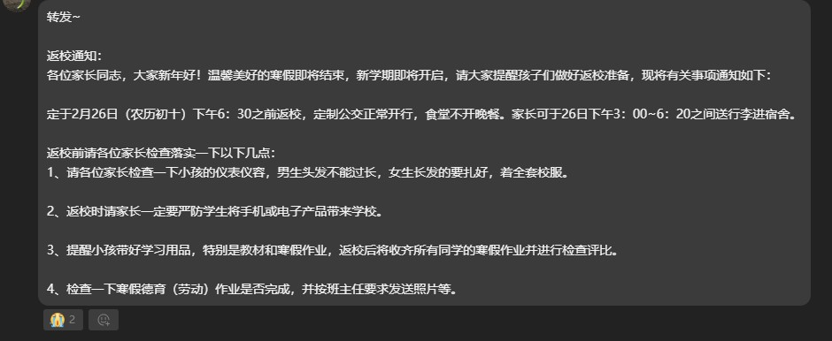
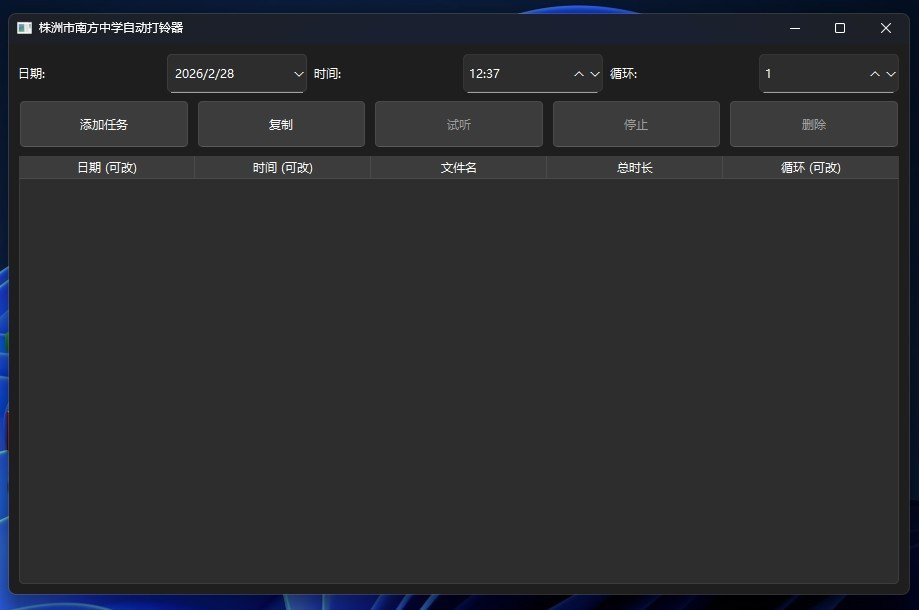
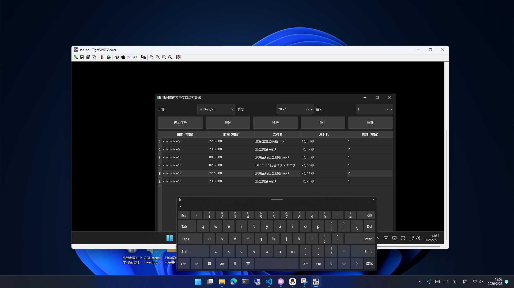

众所周知我们学校提前开学，按湖南省的要求应该是三月一号正式开学，而我们早在26号就要返校，年都没过完就要回去坐牢。对于我们这些奥赛班的人就更惨了，刚放假就要强制上8天的课，要是是纯信奥还好，但它捆绑了文化课。你不想放假可以不放，不要来恶心我们。
这我肯定不能忍，为了表达反抗，我使用Python+PySide6编写了一个程序
这个程序平时常驻后台，他会在指定日期时间播放音乐，并且可自定义循环次数等。还记得《我和AbCd白嫖了一台12代i5电脑》中提到的404-2机子吗？那台希沃不仅性能好，而且喇叭声音也大，最重要的是404-2旁边就是年级组办公室406，是安装软件的最佳地点。
我先钻进404-2把希沃的音量调到最大，再在本班通过VNC连接（不能使用RDP，因为我要使用Administrator账户）进行测试。4楼的机子发出的声音在五楼都听得到，我很满意。
接着就是配置时间表。26号晚上我设置了11点的播放任务，此时我早已放学，只能期待当天晚上一切正常。
27号一大早，我询问了一些同学，得知未被老师发现。这也增长了我的野心。
现在无论是值班巡查的保安，还是深夜加班的老师，在晚上都能被野兽先辈的恶臭咆哮吓到，也能听到各种奇怪的音乐。
现在它俨然成为一个民办广播站，同学们可以在这台电脑上点歌，也可以播报一些内容表达对学校的不满。
这个程序我暂时不会发布。因为我有更伟大的计划。现在只是一台电脑播放，我想在自己班电脑搞个服务端，在其他班级安装客户端，晚上自动局域网内传输音频文件和时间表，然后在指定时间一起放，轰塌整座教学楼。
附：为什么我对提前开学这么反感？
因为这挤占了我的休息时间。每天早上我6点多就要起来，11点多才能睡，每天为了不迟到急急忙忙的早餐都吃不好。如果一个学校连学生的基本生理需求都不能保障，那注定不是什么好学校。